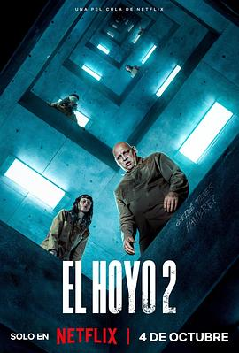

5.6
饥饿站台2
The Platform 2
2024
西班牙
评分 5.6
导演:
加尔德·加兹特鲁·乌鲁蒂亚
演员:
米莱娜·斯米特 / 霍威克·库区科利安 / 娜塔丽·特纳 / 奥斯卡·贾恩那达 / 伊万·马萨格 / 佐伦·伊格 / 巴斯蒂安·乌盖托
类型:
恐怖,惊悚,科幻
剧情简介
当楼层循环，平台缓缓下移，食物从上而下被掠夺，而在这座垂直牢笼中，每一口都可能是生死一线。新居民佩鲁姆潘（米莱娜·斯米特 饰）来到这座充满规则与残酷的地下结构——每个月，她与另一人被分配到不同楼层，从高处走向未知的深渊。她的搭档是扎米亚汀（霍威克·库区科利安 饰），一个沉默冷峻的数学家，他们在昼夜颠倒、平台轰鸣的空间里摸索生存。两派人群——遵守“忠诚者”规则的囚犯和肆意掠夺的“野蛮者”——在食品与身体的裂缝中对抗。佩鲁姆潘在一次救援行动中见证了野蛮者的暴行，也看见了制度表面下的脆弱——所谓公平其实在高层垂直压迫下崩塌。随着时间推进，佩鲁姆潘与扎米亚汀携手突破重重禁锢：从被限制的食物盘到无法逃避的阶层移动，从冷酷的监控到自我意识觉醒。影片凭借紧张的节奏与暗沉的场景，将焦灼与反抗混合，用血肉与金属撞击出一个对人性与制度的冷镜。导演巧用平台的下沉轨迹象征权力的纵深，而人物的行动——选择、牺牲、抗争——成为破碎规则中的闪光。在这个世界里，每一层都是悬念，每一盘食物都是赌注，佩鲁姆潘的旅程恰如一场空前的舞台：她不仅要在饥饿中生存，更要在制度与暴力之间求解。